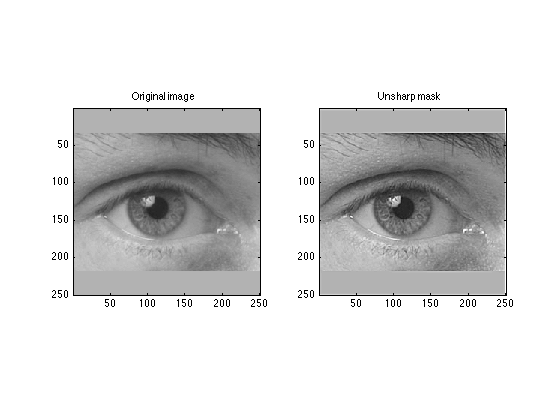
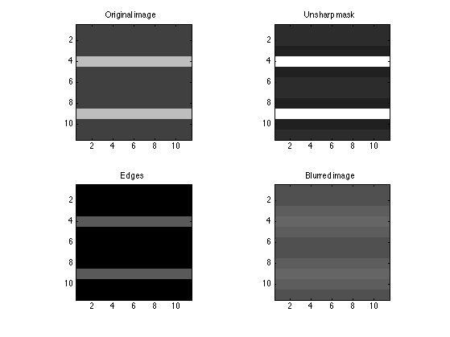
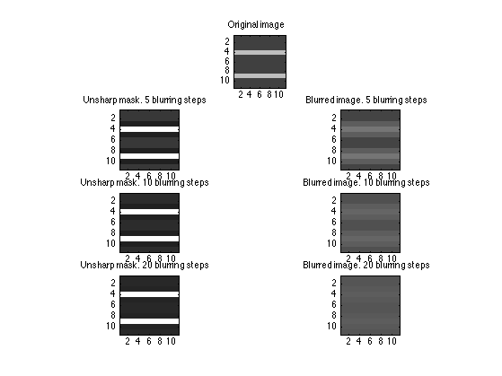
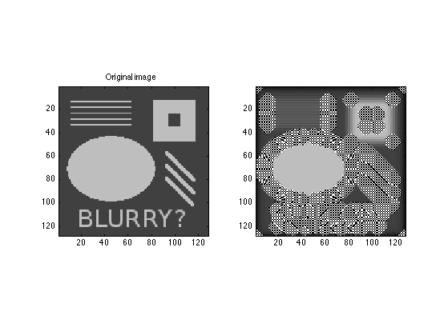
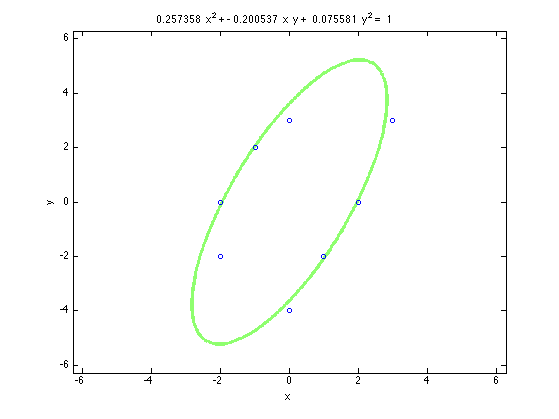
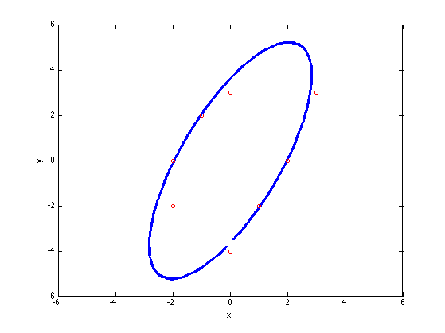
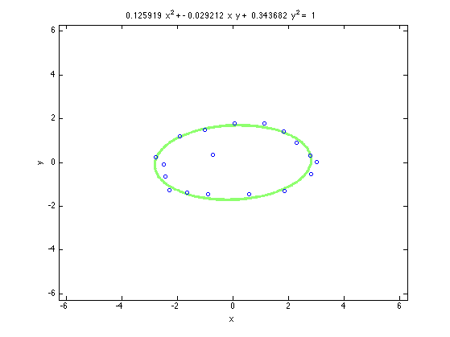

Problem 2 and 3
Contents
Problem 2: A little more Least squares.
For avoiding unnecessary copy and paste I have implemented the function more least squares that performs all the required computations in exercises 2 and 3. The code of the function is shown at the end of the exercise.
clear;close all;clc;
m = 50; n = 5;
[X, labels, error, kappa_5] = moreLeastSquares(m, n);
Display the results for Problem 2. The variable "labels" indicate the method followed for computing the results shown below. The variable "X" contains the coefficient of the least square approximation. The variable "error" contains the norm2 error of the residuals, ie Ax - b.
format long
labels
X
error
labels =
'Back Slash' 'Least Squares' 'QR factorization' 'SVD'
X =
0.977651051050956 0.977651051050607 0.977651051050958 0.977651051050960
0.787296437030590 0.787296437038082 0.787296437030580 0.787296437030554
-13.726690028111138 -13.726690028144622 -13.726690028111090 -13.726690028111035
14.993014653596203 14.993014653647393 14.993014653596127 14.993014653596131
-3.665759654743957 -3.665759654769070 -3.665759654743924 -3.665759654743953
error =
0.061356756239887 0.061356756239887 0.061356756239888 0.061356756239887
Minimum error, measured as the 2-norm of the residuals, obtained with the method To check which method stands out we check the magnitude of the log of errors.
log_error = log(error)
log_error =
-2.791049987729135 -2.791049987729132 -2.791049987729119 -2.791049987729122
The minimum error is obtained with the method:
me = min(log_error);
idx = find(log_error == me);
labels{idx}
ans =
Back Slash
The maximum error is obtained with the method:
ME = max(log_error);
idx = find(log_error == ME);
labels{idx}
ans =
QR factorization
However the differences in the log errors being of the order of 10^-36, we could say that all of them perform similarly when looking at the norm 2 of the residuals.
Problem 3: Condition Numbers
Calculate the condition number of each method for n = 10.
m = 50; n = 10;
[~, ~, ~, kappa_10] = moreLeastSquares(m, n);
The condition numbers for the different methods and values of n are contained on the table below.
fprintf('Methods \t\t | \t\t 5 steps \t\t | \t\t 10 steps \n');
for it = 1:length(kappa_5)
if it == length(kappa_5)
fprintf('%s \t\t\t | \t\t %f \t\t | \t\t %f\n', labels{it}, kappa_5(it), kappa_10(it));
elseif it == 3
fprintf('%s \t | \t\t %f \t\t | \t\t %f\n', labels{it}, kappa_5(it), kappa_10(it));
else
fprintf('%s \t\t | \t\t %f \t\t | \t\t %f\n', labels{it}, kappa_5(it), kappa_10(it));
end
end
Methods | 5 steps | 10 steps
Back Slash | 642.667357 | 3558944.505139
Least Squares | 413021.331912 | 12663833724895.404297
QR factorization | 642.667357 | 3558944.505224
SVD | 642.667357 | 3558944.505087
According to the rule in the homework let k be the number of digits lost and K(A) the condition number of the problem, they are related by the following formula K(A) = 10^k, thus k = log10(K(A)) The results are summarized in the table below. The worst results are for the case where we use the normal equations. This was expected as the use of the normal equations is an unstable method for doing least squares as K(A'*A) = K(A)^2 and not K(A)
f_digits_lost = @(k)(log10(k));
dig_lost_5 = f_digits_lost(kappa_5);
dig_lost_10 = f_digits_lost(kappa_10);
fprintf('\n\nMethods \t\t | \t\t 5 steps \t\t | \t\t 10 steps \n');
for it = 1:length(kappa_5)
if it == length(kappa_5)
fprintf('%s \t\t\t | \t\t %f \t\t | \t\t %f\n', labels{it}, dig_lost_5(it), dig_lost_10(it));
elseif it == 3
fprintf('%s \t | \t\t %f \t\t | \t\t %f\n', labels{it}, dig_lost_5(it), dig_lost_10(it));
else
fprintf('%s \t\t | \t\t %f \t\t | \t\t %f\n', labels{it}, dig_lost_5(it), dig_lost_10(it));
end
end
Methods | 5 steps | 10 steps
Back Slash | 2.807986 | 6.551321
Least Squares | 5.615972 | 13.102565
QR factorization | 2.807986 | 6.551321
SVD | 2.807986 | 6.551321
Custom function moreLeastSquares
function [X, labels, error, kappa] = moreLeastSquares(m, n)
t = linspace(0, 1, m)';
A = zeros(m,n);
P = eye(n);
for it = 1:n
A(:, it) = polyval(P(n-it+1, :), t);
end
b = cos(4*t);
x_BS = A \ b;
x_LS = A'*A \ A'*b;
[Q, R] = qr(A, 0);
R = R(1:size(R, 2), 1:end);
x_QR = backSub(R, Q'*b);
[U,S,V] = svd(A,0);
invS = diag(1./diag(S));
x_SVD = V*invS*U'*b;
labels = {'Back Slash', 'Least Squares', 'QR factorization', 'SVD'};
X = [x_BS, x_LS, x_QR, x_SVD];
col_X = size(X, 2);
error = zeros(1, col_X);
for it = 1:size(X, 2)
error(it) = norm(A*X(:, it) - b, 2);
end
kappa = zeros(col_X, 1);
kappa(1) = cond(A);
kappa(2) = cond(A'*A);
kappa(3) = cond(Q*R);
kappa(4) = cond(U*S*V');
end
Custom function backSub
function x = backSub(U, b)
n = length(b);
x = zeros(n, 1);
for i=n:-1:1
x(i) = ( b(i) - U(i, :)*x ) / U(i, i);
end
end
Problem 4
Contents
Problem 4: Image processing and the "unsharp mask"
close all;clear;
img_name = 'eye.png';
[u, ublur] = blurImg(img_name, 10, 0.1);
uedges = u - ublur;
usharp = u + uedges;
figure;
subplot(1,2,1);imagesc(u);title('Original image');
caxis([0 1]);colormap(gray);axis equal, axis tight;
subplot(1,2,2);imagesc(usharp);title('Unsharp mask');
caxis([0 1]);colormap(gray);axis equal, axis tight;

Zoom in to see the effect on the edges
As explained in the tutorial provided, bright zones are made brighter whereas dark zones are made darker.
close all;clear;
img_name = 'testpat_noblur.png';
idx = 20:30;
[u, ublur] = blurImg(img_name, 10, 0.1);
uedges = u - ublur;
usharp = u + uedges;
figure;
title('Zoom-in testpat_noblur.png to appreaciate distorsion in the edges');
subplot(2,2, 1);imagesc(u(idx, idx));title('Original image');
caxis([0 1]);colormap(gray);axis equal, axis tight;
subplot(2,2,2);imagesc(usharp(idx, idx));title('Unsharp mask');
caxis([0 1]);colormap(gray);axis equal, axis tight;
subplot(2,2, 3);imagesc(uedges(idx, idx));title('Edges');
caxis([0 1]);colormap(gray);axis equal, axis tight;
subplot(2,2, 4);imagesc(ublur(idx, idx));title('Blurred image');
caxis([0 1]);colormap(gray);axis equal, axis tight;

Zoom in to check the effect of the time steps
The longer the time the more the effect of the method fades away. For the unsharp we observe that increasing the time steps results in that a greater surface is darkened, not only the edges. The resulting blurred image is of the same grey color.
steps = [5, 10 , 20];
figure;
title('Effect of different time steps');
subplot(4,1, 1);imagesc(u(idx, idx));title('Original image');
caxis([0 1]);colormap(gray);axis equal, axis tight;
for it = 1:length(steps)
[u, ublur] = blurImg(img_name, steps(it), 0.1);
uedges = u - ublur;
usharp = u + uedges;
subplot(4,2, 3 + 2*(it-1));imagesc(usharp(idx, idx));
title(sprintf('Unsharp mask. %d blurring steps', steps(it)));
caxis([0 1]);colormap(gray);axis equal, axis tight;
subplot(4,2, 4 + 2*(it-1));imagesc(ublur(idx, idx));
title(sprintf('Blurred image. %d blurring steps', steps(it)));
caxis([0 1]);colormap(gray);axis equal, axis tight;
end

Increasing the time step
Changing the dt to 0.5 we observe that the values of ublur do not lie within the [0, 1] limit any more. This is due to the conditional stability of the explicit scheme
img_name = 'testpat_noblur.png';
[u, ublur] = blurImg(img_name, 10, 0.5);
figure;
subplot(1,2,1);imagesc(u);title('Original image');
caxis([0 1]);colormap(gray);axis equal, axis tight;
subplot(1,2,2);imagesc(ublur);title('');
caxis([0 1]);colormap(gray);axis equal, axis tight;

Maximum and minimum values of the original image
max(max(u)), min(min(u))
ans =
0.749019607843137
ans =
0.250980392156863
Maximum and minimum values of the original image. Values out of bounds.
max(max(ublur)), min(min(ublur))
ans =
2.879130675551471e+03
ans =
-2.849341674325981e+03
Problem 5
Fitting elipses via least squares
Contents
Using the points in section b
y = [3;-2;3;2;-2;-4;0;0];
x = [3;1;0;-1;-2;0;-2;2];
Displaying the equation of the fitted elipse
[b, c, d] = ellipse(x, y);
fprintf('\nEllipse: %f*x^2 + %f*x*y + %f*y^2 = 1\n', b, c, d);
Ellipse: 0.257358*x^2 + -0.200537*x*y + 0.075581*y^2 = 1
I have done two plots the first one using ezplot
figure;
el = ezplot(sprintf('%f*x^2 + %f*x*y + %f*y^2 = 1', b, c, d));
set(el, 'LineWidth', 3)
hold on;
plot(x, y, 'o', 'MarkerSize', 5);
xlabel('x'); ylabel('y');

Using the tan(theta) trick
theta = linspace(-0.49*pi, 0.49*pi)';
gen_x = @(theta)(1./sqrt(b + c * tan(theta) + d*tan(theta).^2));
gen_y = @(theta)(tan(theta)./sqrt(b + c * tan(theta) + d*tan(theta).^2));
x_gen = gen_x(theta);
y_gen = gen_y(theta);
figure;
plot([x_gen; -x_gen], [y_gen; -y_gen],'LineWidth', 3);
hold on;
plot(x, y, 'ro', 'MarkerSize', 5);
xlabel('x'); ylabel('y');axis([-6 6 -6 6]);

Using manually input points
load('points.mat');
The fitted ellipse is
[b, c, d] = ellipse(x, y);
fprintf('\nEllipse : %f*x^2 + %f*x*y + %f*y^2 = 1\n', b, c, d);
Ellipse : 0.125919*x^2 + -0.029212*x*y + 0.343682*y^2 = 1
Plot of the fitted ellipse
figure;
el = ezplot(sprintf('%f*x^2 + %f*x*y + %f*y^2 = 1', b, c, d));
set(el, 'LineWidth', 3)
hold on;
plot(x, y, 'o', 'MarkerSize', 5);
xlabel('x'); ylabel('y');

Custom function ellipse
function [b, c, d] = ellipse(x, y)
if size(x, 2) ~= 1 || size(y, 2) ~= 1
error('x and y should be column vectors')
end
A = [x.^2, x.*y, y.^2];
b = ones(size(x));
coeffs = A\b;
b = coeffs(1);
c = coeffs(2);
d = coeffs(3);